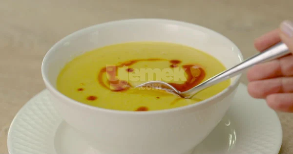

Lentil Soup

Description
Lentil soup recipe is our go-to recipe in every season, at any time, in any situation, regardless of summer or winter. It is one of the most popular soups! That's why it is a timeless soup.
Ingredients
- 3 tablespoons sunflower oil
- 1 onion (coarsely chopped)
- 1 tablespoon flour
- 1 carrot (chopped coarsely)
- 1 potato (large size, roughly chopped)
- 1 teaspoon salt
- 1 teaspoon black pepper
- 1.5 cups red or yellow lentils
- 6 cups hot water (prepared with 1 meat water tablet)
Steps to Prepare
- Add 3 tablespoons of oil to a deep pot. Fry 1 large chopped onion with oil.
- Add 1 tablespoon of flour to the roasted onions and continue roasting until the smell disappears
and the color changes. Transfer one carrot and one potato, cut into large pieces, into the pot and continue mixing.
- After washing with salt, black pepper and plenty of water, add 1.5 cups of drained lentils and mix
well one last time.
- Add 6 cups of hot water to the pot.
- Then close the lid and cook for about 40 minutes, stirring occasionally, until the potatoes and
carrots become soft.
- In order for the soup to have a smooth consistency after cooking; pass it through a hand blender.
After cooking for another 5 minutes, remove from the stove.
- Heat 3 tablespoons of oil and 2 tablespoons of butter in a pan. Add 1 teaspoon of red pepper powder
and heat the oil for 2 minutes, then remove it from the stove.
- Put the soup in a bowl, drizzle with the heated oil and serve.